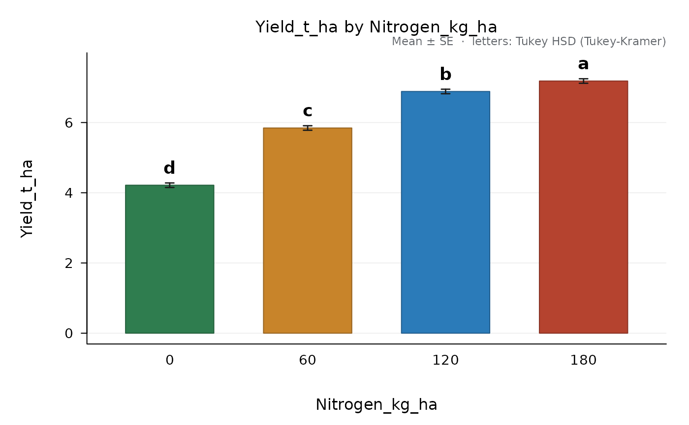
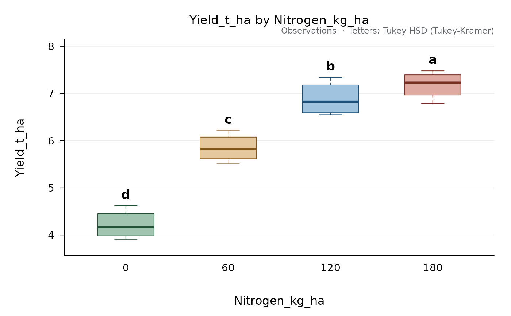
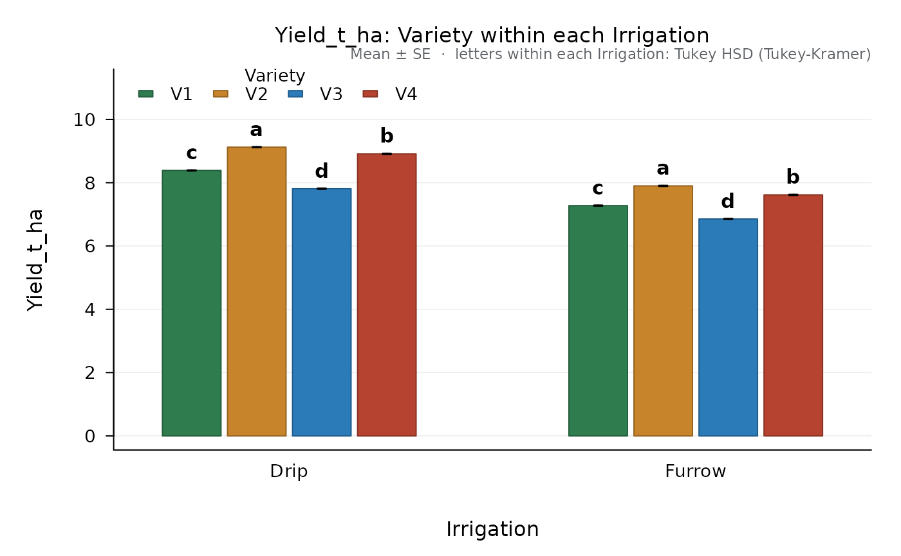

Draws the means of a comparison from compare_means() as bars or points
with error bars, or the observations as box plots or points, and writes
the letters of the groups above them. With simple effects (by), the
means are grouped by the levels of the other factor and the letters are
valid within each group.
Arguments
- x
An
"ad_comparison"object.- style
"bars","points","box"(box plots of the observations) or"strip"(every observation, with the mean and its error bar).- error
Error bars:
"se"(standard error of the mean),"ci"(95 % confidence interval with the error degrees of freedom) or"none".- letters
Write the letters of the groups.
- values
Write the value of each mean.
- sort
Sort the levels by their mean, highest first.
- col
Fill colours, one per level (default:
agri_colors()).- main, xlab, ylab
Titles;
NULLbuilds them from the analysis.- ylim
Range of the vertical axis.
- letter_cex
Size of the letters.
- digits
Decimals of the values written with
values = TRUE.- ...
Further graphical parameters passed to
graphics::plot.window().
Examples
fit <- design_anova(maize_nitrogen, "Yield_t_ha", "Nitrogen_kg_ha", block = "Block")
cmp <- compare_means(fit, "Nitrogen_kg_ha")
plot(cmp)

plot(cmp, style = "box")

fit <- design_anova(split_irrigation, "Yield_t_ha", c("Irrigation", "Variety"),
block = "Block", design = "split_rcbd")
plot(compare_means(fit, "Variety", by = "Irrigation"))
